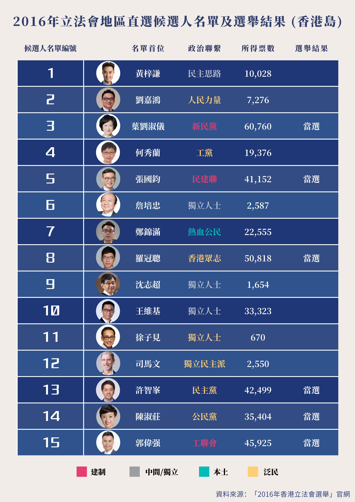

人們普遍認為，香港的忠誠政黨，或建制派政黨，往往在不太富裕的社區獲得更多支持，但事實真的如此嗎？
為了回答這個問題，本工作坊基於2016年立法會地區直選中香港島選區（LC1）的投票結果，深入探究80個區議會選區（District Council Constituency Area） —— 中西區15個，灣仔13個，東區35個以及南區18個選區 —— 選民對建制派候選者的支持率（[候選者在各區議會選區所得票數/16年各選區選民人數]*100%）與個選區居民每月主要職業收入中位數（不包括外籍家庭傭工），從而了解建制派候選人是否獲得較多低收入居民支持。
16年立法會選舉中，建制派參選名單首位候選者包括3號葉劉淑儀，5號張國鈞與15號郭偉強，他們分別來自新民黨，民建聯以及工聯會。三人均在是次選舉中成功當選。

人們普遍認為，香港的忠誠政黨，或建制派政黨，往往在不太富裕的社區獲得更多支持，但事實真的如此嗎？
「消防員」職級現設有三個跳薪點，若工作表現良好，並通過升級檢定考試，可在其所屬職務服務滿一年，兩年及五年分別獲一個跳薪點；而「警員」職級共設有五個跳薪點，當他們在警察學院結業後，相當於第0年資，便可獲第一個跳薪點。在與「消防員」條件相若的情況下，「警員」在所屬職級服務滿一年，兩年，三年及五年均可獲其餘四個跳薪點。
換句話說，「警員」在入職前三年便可獲得四個跳薪機會，相較於「消防員」如此薪酬機制可能更有助於吸引、挽留和激勵有合適才幹的人。
此外，長期服務跳薪點是在職級的頂薪點上加設的跳薪點，「消防員」和「警員」均可以在其所屬職級服務滿12、18、24、30及36年取得。
大致上，「消防員」職級在各個年資的薪金均不如「警員」職級。
具體數據也應證了這一觀察。不論是從剛入職，即第0年資（數字取警員未從警察學院結業）的起薪，還是到最後一個長期服務跳薪點第36年資的最高薪酬，「警員」月薪金均遠超「消防員」，且薪金差距隨年資增長而增大，從3,145元到6,640元。
然而，如今在某些方面，消防員相較于警員承受了更多的壓力與危險，以下是部份數據：